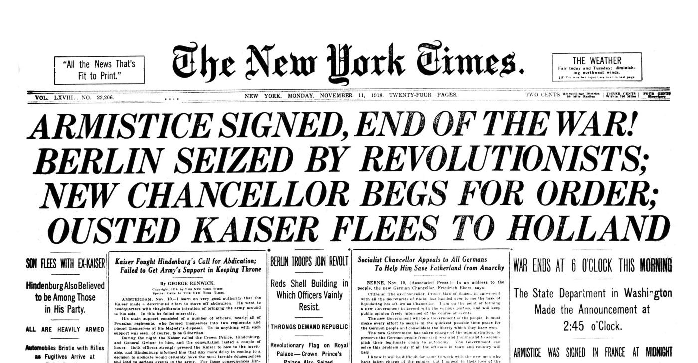

Why Veterans Day Is November 11 at 11 A.M.
Most school holidays float from year to year and land on whichever Monday is convenient, but Veterans Day stays fixed on November 11, and it stays fixed because the date is a timestamp. The armistice that ended the fighting in the First World War was signed in a railway carriage in the Compiègne forest in the early hours of November 11, 1918, and the document set the ceasefire for 11 a.m. that morning, Paris time. The eleventh hour of the eleventh day of the eleventh month was a coincidence the generals did not plan, but it is the reason the holiday sits where it sits, and it gives a class something concrete to hold on to when the day comes around.

Two headlines, one time zone apart
Look at the smaller headline running down the right-hand side of that front page, the one that reads "WAR ENDS AT 6 O'CLOCK THIS MORNING." It looks like a mistake sitting next to a banner announcing that the war is already over, but it is a time conversion rather than an error. Eleven in the morning in France was six in the morning in New York, and the headline writer did that arithmetic for readers who were waking up to the news and would want to know when, exactly, the ending took effect in the place where their sons were fighting. The shape of that whole morning is in the gap between the two headlines, because the war had been given an ending time that everyone on both sides knew about, and the clocks had to run out before the guns were allowed to stop.
The last morning
The guns did not stop when the document was signed, since the orders said the ceasefire began at 11, and units along the front kept fighting through the morning, in some places because commanders used the final hours to take ground they expected to hold once the line froze. Men were killed on the last morning of a war whose end had already been announced in the newspapers back home. The last American killed was Private Henry Gunther of Baltimore, who was shot at 10:59 a.m. near the village of Chaumont-devant-Damvillers, one minute before the guns were scheduled to stop. Students tend to remember the date after they hear that detail, because it turns an anniversary into a question about who decided when the war was allowed to end.
What Wilson asked the country to do with the day
One year later, President Woodrow Wilson marked the first anniversary of the armistice and set the tone the day has carried ever since, asking the country for reflection rather than celebration.
To us in America the reflections of Armistice Day will be filled with solemn pride in the heroism of those who died in the country's service and with gratitude for the victory, both because of the thing from which it has freed us and because of the opportunity it has given America to show her sympathy with peace and justice in the councils of the nations.
Wilson's day was about one war, and it took until 1954 for President Eisenhower to widen it, when Armistice Day became Veterans Day and the observance opened to everyone who had served in any war. The date and the hour stayed where the armistice had put them, and they survived a serious attempt to move them, since Congress voted in 1968 to shift the holiday to a Monday and the change proved unpopular enough that November 11 was restored in 1978. By then the date itself had become the point of the day, which is a useful thing for students to notice about how anniversaries work.
The lesson in one period
- Five minutes. Project the front page and ask why one headline says the war is over while another gives it an ending hour that had not yet arrived in New York, and let students work out the time difference for themselves before you confirm it.
- Ten minutes. Tell the morning straight, from the signing before dawn through the 11 a.m. start of the ceasefire, including the fighting that filled the gap and Gunther's death at 10:59.
- Fifteen minutes. Read Wilson's 1919 passage aloud, then have students pull out the two feelings he names for the day, solemn pride and gratitude, along with the reason he gives for each one.
- Ten minutes. One paragraph in writing, answering why the United States still marks a date and an hour instead of taking a Monday. Students who use the 1968 move and the 1978 restoration as their evidence usually write the strongest answers.
- Five minutes. If your schedule allows it, end with a minute of silence and tell the class that a pause at 11 a.m. has been kept on this day since 1919.
The matching resource
The Eleventh Hour is a classroom simulation built on this same ground, in which students advise Wilson in 1919 and Eisenhower in 1954 while the day is created decision by decision, from its date and its name to the poppy and the Tomb of the Unknown Soldier. The pack on Teachers Pay Teachers carries the full game file along with the printable debrief and the teacher guide. It is free through Thursday, November 5, and $5.99 starting Friday, November 6.
Back to the blog index.